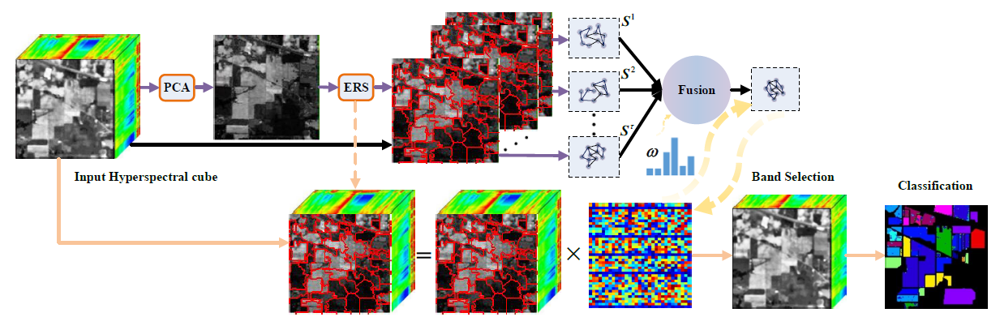
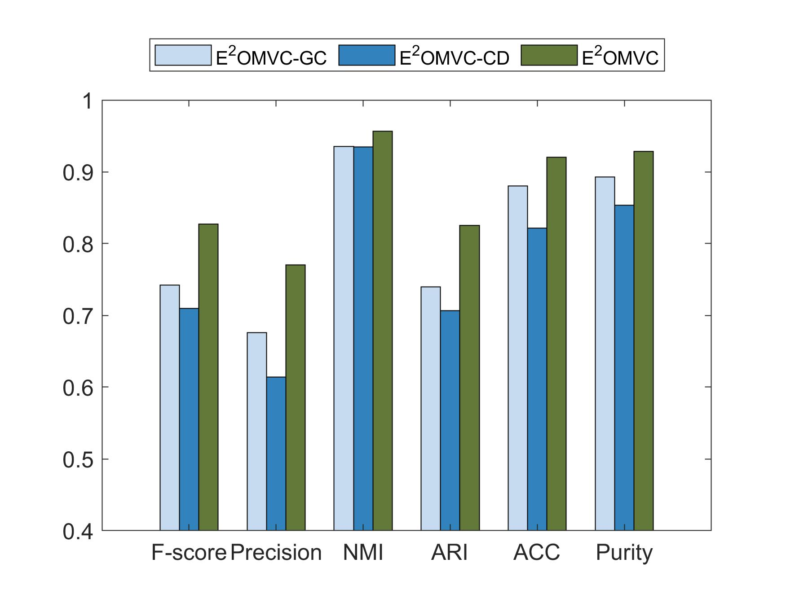
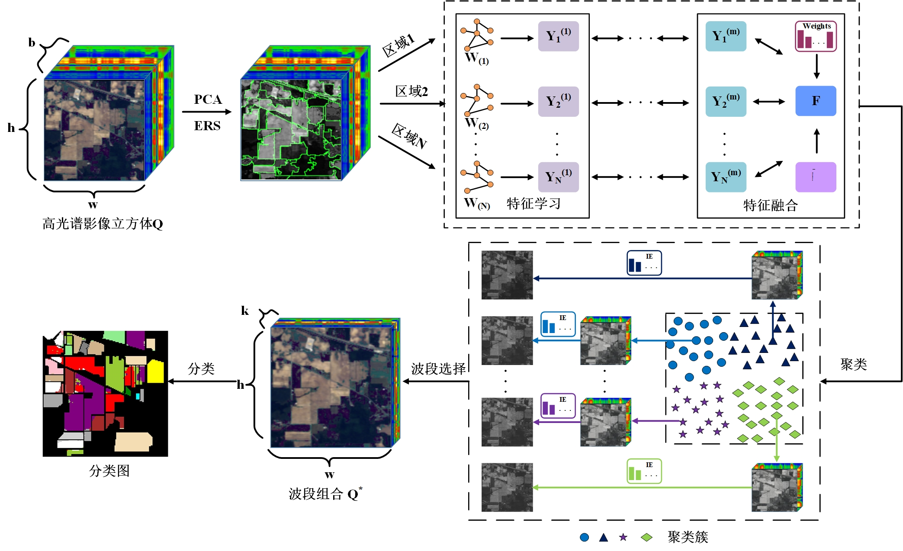
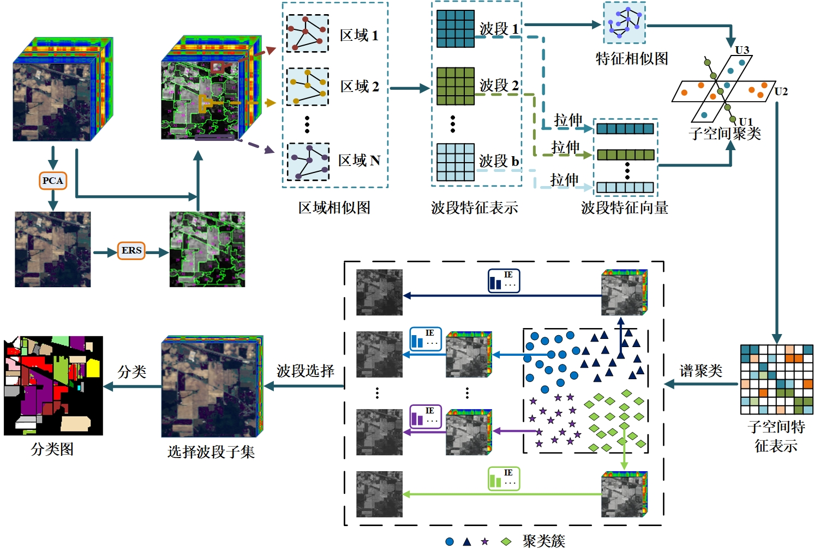
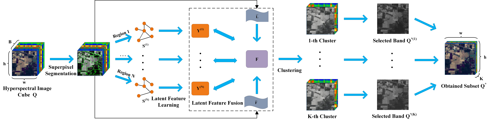

Jun Wang's Homepage
|
Jun Wang (王俊)
|
Biography
I am a PhD student in the School of Computer Science, National University of Defense Technology, Changsha, supervised by Prof. Xinwang Liu. Previously, I received my master's degree
in School of Computer Science, China University of Geosciences, Wuhan
(CUG) in 2023, supervised by Prof. Chang Tang.
My research interests include
News
- [2023/10] One paper was accepted by IEEE Transactions on Geoscience and Remote Sensing (CCF B).
- [2023/02] One paper was accepted by IEEE Transactions on Neural Networks and Learning Systems (CCF B).
- [2022/06] One paper was accepted by IEEE Transactions on Cybernetics (CCF B).
- [2022/06] One paper was accepted by Neural Networks (CCF B).
- [2022/05] One paper was accepted by IEEE Transactions on Knowledge and Data Engineering (CCF A).
- [2021/09] One paper was accepted by Information Fusion.
- [2021/01] One paper was accepted by the Journal of Tianjin University (Science and Technology).
Education
-
Ph.D. in National University of Defense Technology,
School of Computer Science
2023.09-Now
Supervisor: Prof. Xinwang Liu
-
M.S. in China University of Geosciences (Wuhan),
School of Computer Science
2020.09-2023.06
Supervisor: Prof. Chang Tang
-
B.S. in Hubei University of Technology,
School of Economics and Management
2015.09-2019.06
Publications
|  |
Spatial and Spectral Structure Preserved Self-representation for Hyperspectral Band Selection |
|  |
Efficient and Effective One-step Multi-view Clustering |
|  |
Region-aware Hierarchical Latent Feature Representation Learning Guided Clustering for Hyperspectral Band Selection |
 |
Unified One-step Multi-view Spectral Clustering |
|  |
Graph Regularized Spatial-spectral Subspace Clustering for Hyperspectral Band Selection |
|  |
Hyperspectral Band Selection via Region-aware Latent Features Fusion Based Clustering |
Services
Peer Review:
-
IEEE Transactions on Neural Networks and Learning Systems
-
IEEE Transactions on Cybernetics